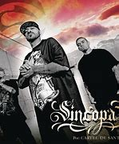

CARTEL DE SANTA VOL 1,Es el primer album de CARTEL DE SANTA, lanzado en 2001, donde destaco sus canciones "La Pelotona","Perros","Todas Mueren Por Mi","Burreros" Entre muchas mas, este Album, fue censurado, muchas veces por su alto contenido de Groserias, y letras muy explicitas, Pero apesar de Eso, Este Album, Catapulto al Cartel De Santa Al Exito, Y gracias a la ayuda de Su Disquera que los ayudo a vender sus discos

CARTEL DE SANTA VOL 2, Es el segundo Album De Cartel De Santa, Lanzado En El Año del 2004, Contiene canciones buenas, Destacando "El Dolor Del Micro" esta cancion es una colaboracion con Julieta Venegas, "El Arte Del Engaño", Esta cancion es la mas destacada de este album, Destacan tambien "Mi Chiquita", "La Plaga Del Rap" en colaboracion con Ariana Puello.

VOLUMEN PROIIIBIDO, Es el tercer Album de Cartel De Santa,Lanzado En el Año 2006, Cuenta con exitos como "Cheka wey","Hey Si Me Ven","Subele A La Greibol", "Dos Mujeres En My cama" Entre muchas mas...

CARTEL DE SANTA VOL4, Es el cuarto Album De Cartel De Santa, Lanzado En El Año 2008, Contando con exitos como "Babo Regresa","Hay Mamita","Vato Sencillo","Cosas De La Vida", entre muchas mas, Una caracteristica de este Album, Es que fue escrito durante el tiempo en el que el vocalista "Babo", estuvo en la carcel, por matar accidentalmente a un amigo, suceso que relata mejor en la cancion "Cosas De La Vida"....
